이 글은 전체 2편 중 1편입니다. 긴 영상을 주제 흐름에 맞춰 나누어 정리했습니다.
채널: Evan Carmichael | 길이: 41:07 | 날짜: 2026-03-26
이 글은 전체 2편 중 1편입니다. 여기서는 제공된 0:00-21:09 구간만 상세히 다루며, 이후 내용은 다음 편에서 이어지는 맥락으로만 언급합니다.
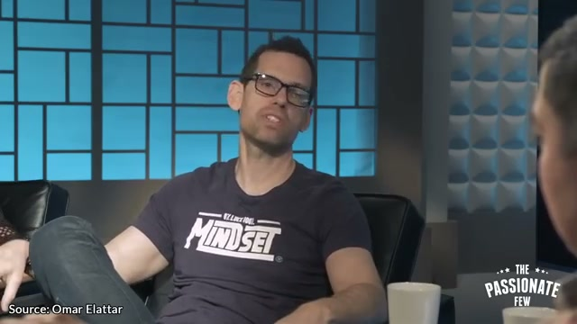
영상의 첫 메시지는 “돈을 빨리 버는 방법”을 사업 아이디어 자체에서 찾지 말라는 것이다. 많은 사람은 완벽한 사업, 완벽한 첫 작품, 완벽한 타이밍이 올 때까지 기다리며 출발을 미룬다. 그러나 영상은 첫 글이 반드시 할리우드 영화가 되고, 첫 노래가 반드시 빌보드 1위가 되어야 한다는 식의 기준이 현실을 마비시킨다고 설명한다. 이런 과장된 기대는 행동을 더 정교하게 만드는 것이 아니라 시작 자체를 막는다.
핵심 주장은 완벽주의가 진전을 만들지 못한다는 점이다. 억만장자들을 1,000시간 넘게 연구하면서 얻은 결론으로, 부의 창출은 신속한 결정 능력에 달려 있다고 말한다. 결정하고 틀리는 것이 결정 자체를 두려워하는 것보다 낫고, 결정하지 않는 것은 사실상 확실한 오답과 같다고 강조한다. 특히 대부분의 결정은 나중에 마음을 바꾸거나 수정할 수 있으므로, 혼자 빠르게 내려야 한다고 제안한다.
영상은 “전략은 말이 아니라 행동”이라고 못 박는다. 행동하지 않는 전략은 사고 실험에 머무를 뿐이며, 긴박감을 만들어 지금 바로 실행해야 한다. 완벽한 순간을 기다리는 사람은 남들이 꿈을 이루는 모습을 지켜보며 제자리에 머물 수밖에 없다. 그래서 이 구간의 핵심은 생각보다 실천이 훨씬 효율적이며, 배움도 실행을 통해 더 빨리 일어난다는 점이다.
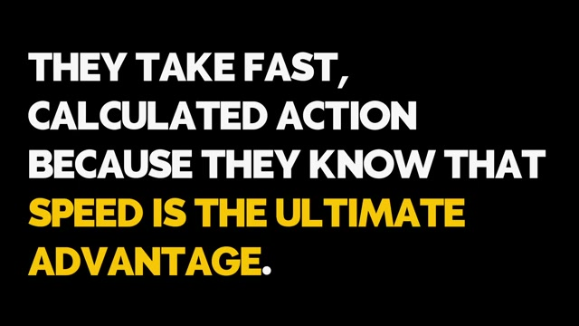
리처드 브랜슨의 초기 일화는 빠르고 계산된 행동의 상징으로 사용된다. 20대의 브랜슨은 버진 아일랜드행 항공편이 취소되어 공항에 갇혔다. 대부분의 승객이 불평하며 누군가 해결해주기를 기다릴 때, 그는 전세기 회사에 연락해 비행기를 예약했다. 그리고 화이트보드에 “Virgin Airlines $39”라고 적어 터미널을 돌며 같은 처지의 승객을 모집했다.
이 행동은 무모한 충동이 아니라 문제, 수요, 가격, 실행을 즉석에서 연결한 계산된 행동이었다. 그는 함께 발이 묶인 승객들로 비행기를 채웠고, 전세기에 투자한 돈을 모두 회수했다. 영상은 이 빠르고 담대한 결정이 훗날 수십억 달러 규모의 항공 제국으로 이어졌다고 설명한다. 즉, 거대한 사업은 완성된 계획서에서만 태어나는 것이 아니라 눈앞의 불편을 해결하는 즉각적 행동에서 출발할 수 있다.
이 장면이 뒷받침하는 판단은 “속도는 최고의 이점”이라는 문장이다. 억만장자들은 무모한 선택을 하는 것이 아니라 두려움에 마비되기를 거부한다. 빠른 행동은 실수를 부를 수 있지만, 실수를 두려워해 아무것도 하지 않는 것보다 더 많은 학습과 기회를 만든다. 영상은 이후 “인생을 걸지 않고 부를 쌓는 빠른 의사결정법”을 보여주겠다고 예고한다.
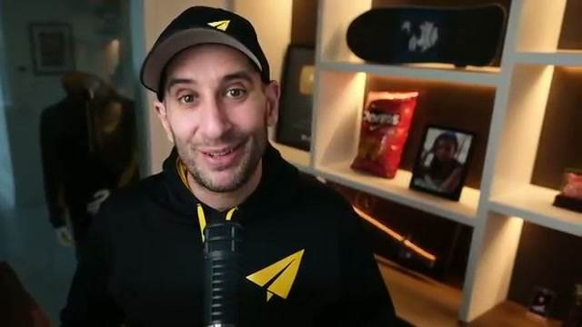
두 번째 큰 주제는 집중이다. 영상은 많은 사람이 돈을 지키기 위해 여러 투자와 프로젝트에 분산해야 한다고 믿지만, 워런 버핏은 분산 투자를 “무지에 대한 보호”로 본다고 설명한다. 즉, 자신이 무엇을 하는지 모를 때는 분산이 방어가 될 수 있지만, 정확히 이해하는 영역이 있다면 집중을 흩트리는 행위가 성공을 늦출 수 있다는 주장이다.
억만장자들은 스무 가지 프로젝트에 조금씩 투자해서 막대한 부를 쌓는 사람들이 아니다. 그들은 한 가지를 선택하고 그 분야를 마스터하는 데 에너지, 시간, 돈을 집중한다. 한 산업에 깊이 몰입하면 평범한 사람에게 보이지 않는 기회가 보이기 시작하고, 시장을 누구보다 잘 이해해 경쟁 우위를 얻는다. 이때의 집중은 단순한 열심이 아니라 전문성과 기회 감지 능력을 축적하는 방식이다.
영상은 돈을 벌기 어렵다면 자신의 일과를 점검하라고 말한다. 세 가지 사업, 다섯 가지 기술 공부, 열두 개의 소셜 계정 관리처럼 너무 많은 일에 흩어져 있을 가능성이 높다는 것이다. 해결책은 가장 열정과 잠재력이 있는 한 분야를 선택하고, 방해 요소를 제거한 뒤 그 한 가지를 크게 성공시키는 데 모든 힘을 쏟는 것이다. 집중할 자격은 외부에서 주어지는 것이 아니라 스스로 만들어야 한다.
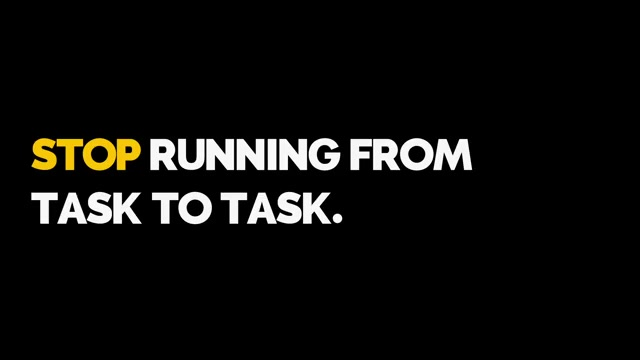
집중은 시간표만의 문제가 아니라 뇌 상태의 문제로 확장된다. 영상은 스트레스에 눌린 뇌로는 억 달러짜리 결정을 할 수 없다고 말한다. 보통 사람들은 아침에 일어나자마자 휴대폰을 보고, 곧바로 오늘 하루에 대한 불안에 빠진다. 이렇게 수동적으로 살면 타인의 알림, 요구, 자극이 자신의 집중력을 좌우하게 된다.
초부유층은 정신 에너지를 가장 소중한 자산으로 보호한다. 그들은 특정 루틴을 통해 뇌를 깊고 창의적인 사고 상태로 유도한다. Tom Bilyeu는 Quest Nutrition을 공동 창업해 억만장자 기업으로 키운 사례로 등장한다. 그는 단순히 죽어라 일해서 성공한 것이 아니라, 자신의 마음을 훈련하기 위해 엄격한 아침 루틴을 만들었다.
그 루틴은 운동으로 규율을 기르고, 곧바로 명상으로 마음을 진정시키는 구조다. 명상을 통해 알파 뇌파 상태에 들어가면 뇌가 가장 편안하고 창의적인 상태가 된다고 설명된다. 그러나 그는 거기서 멈추지 않고, 평온해진 상태에서 ‘thinkitating’을 실천한다. 이는 단순히 마음을 비우는 것이 아니라 가장 큰 비즈니스 문제에 집중해 평소 보지 못한 독특한 해결책을 찾는 과정이다.
영상은 특히 스트레스가 극심할수록 하루 중 속도를 늦출 틈을 내야 한다고 말한다. 일에서 일로 뛰어다니는 것을 멈추고 깊이 생각할 시간을 만들면, 비즈니스를 바꿀 해답을 얻을 수 있다. 이어 핵심 내용과 실행 계획을 세우는 무료 워크시트를 설명란 링크에서 받을 수 있다고 안내한다. 이 구간은 생산성을 더 많은 작업량이 아니라 더 나은 사고 상태에서 찾는다.
다음 주제는 현금 전환 주기다. 경제가 무너질 때 평범한 사람들은 당황해 멈추고, 실패를 시장 탓으로 돌린다고 설명한다. 반면 억만장자들은 혼란을 최고의 성장 기회로 본다. 그들은 외부 투자자가 구원해주기를 기다리는 대신, 비즈니스를 재구조화해 자체 현금 흐름을 창출한다.
제프 베조스와 아마존 사례가 이 논리를 뒷받침한다. 2001년 닷컴 버블 당시 아마존은 가치의 90%를 잃었고, 대부분의 인터넷 기업은 파산했다. 그러나 베조스는 포기하지 않고 회사 전체의 초점을 현금 전환 주기라는 단 하나의 지표에 맞췄다. 고객에게는 미리 돈을 받고, 제품 공급업체에는 28일 뒤 대금을 지급하는 구조를 찾아냈다.
이 구조 덕분에 아마존은 현금 전환 주기 -24일을 달성했다고 설명된다. 대금을 지급하기 전에 현금을 확보하므로, 비즈니스는 외부 자금 없이도 자체적으로 급성장할 수 있었다. 영상은 이 사례를 금융 위기가 베조스를 세계 최고 부호로 만든 성장 동력으로 해석한다. 시청자에게는 자신의 비즈니스에서 현금을 더 빨리 회수하고 지출은 나중에 지급할 방법을 찾으라고 조언한다.
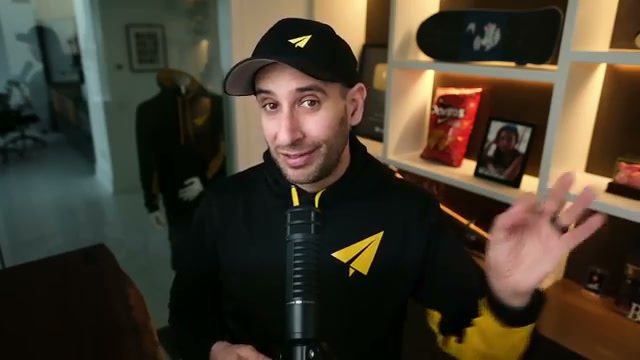
혼자서 거대한 제국을 만들 수 없으므로, 어느 시점에는 다른 사람들을 팀에 합류시켜야 한다. 영상은 이때 가장 큰 실수가 자신보다 덜 유능한 사람을 채용하는 것이라고 말한다. 이것은 단지 똑똑해 보이고 싶은 욕구 때문만이 아니라, 자존심 때문에 자기보다 뛰어난 사람을 두려워하는 태도에서 나온다. 그러나 억만장자들은 자존심을 버리고 자신이 부족한 분야의 천재들을 의도적으로 채용한다.
“러시아 인형 원칙”은 이 메시지를 설명하는 비유다. 자신보다 작은 사람을 채용하면 회사 전체가 작아지고, 자신보다 큰 사람을 채용하면 회사 전체가 커진다는 의미다. 여기서 크다는 것은 체격이나 지위가 아니라 역량, 시야, 전문성, 자기주도성을 뜻한다. 훌륭한 리더는 자신이 모든 것을 직접 통제하려 하지 않고, 각 영역에서 자신보다 뛰어난 사람에게 권한을 준다.
영상은 억만장자들이 내면에 불꽃이 있는 사람을 찾는다고 말한다. 이들은 스스로 동기부여되어 있고 매일 마이크로매니징이 필요 없는 팀원이다. 모든 일의 전문가가 되려 애쓰지 말고, 자신의 에너지를 소모시키는 일을 파악한 뒤 그 일을 사랑하고 잘하는 사람을 고용해야 한다. 그들에게 의사결정의 자유를 주면, 리더는 비전을 제공하고 팀은 그 비전에 가장 빨리 도달할 길을 찾는다.
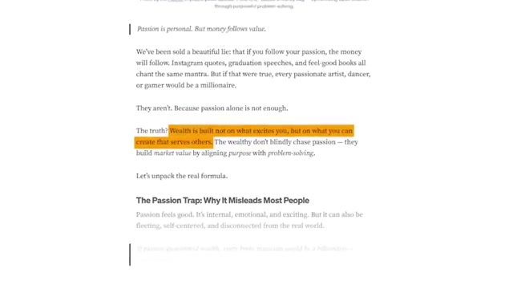
모든 성공한 사람은 한계점에 도달한다. 돈이 바닥나고, 세상이 그만두라고 말하며, 모든 것이 완전히 잘못되는 순간이 찾아온다. 영상은 이 순간이 가난에 머무는 사람과 억만장자가 되는 사람을 가르는 지점이라고 말한다. 이때 자신의 비전이 정말로 싸울 가치가 있는지 결정해야 한다.
2008년 일론 머스크 사례는 이 메시지의 중심이다. 스페이스X 로켓은 연속으로 폭발했고, 테슬라는 몇 주 내 파산 위기에 놓였으며, 머스크는 페이팔로 번 전재산을 쏟아부은 상태였다. 그는 한 회사를 포기해 다른 회사를 살릴지, 아니면 모두를 걸고 두 회사를 다 살릴지 선택해야 했다. 영상은 그가 사명을 포기하느니 시도하다 죽겠다는 식의 결심을 했다고 설명한다.
그는 남은 돈을 나누고 막판에 계약을 따내 두 회사를 실패에서 구해냈다. 영상은 시청자에게도 그런 수준의 헌신을 찾아야 한다고 말한다. 사업을 취미로 여기면 보상도 취미 수준에 그친다. 실패의 길을 막는다는 표현은 단순한 과장이 아니라, 완전히 헌신했을 때 변명 대신 승리할 방법을 찾게 된다는 의미다.
이후 영상은 부와 자신 사이의 장애물은 망설임뿐이라고 정리한다. 오늘 내린 결정 하나가 미래를 바꿀 수 있으므로, 완벽한 순간을 기다리지 말고 지금 대담하게 행동하라고 촉구한다. 이 지점에서 앞선 도입부가 끝나고, “부의 20가지 법칙”으로 본격 전환된다.
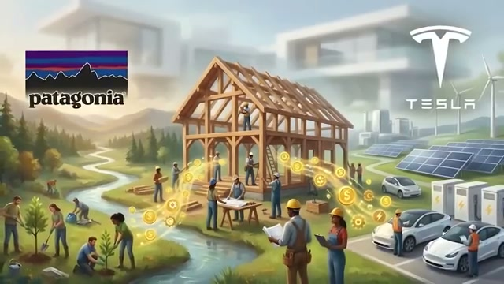
부의 20가지 법칙 중 첫 번째는 돈이 가치를 따라간다는 것이다. 돈은 문제를 해결한 대가로 주어지는 보상이며, 부는 단순한 흥분이나 욕망만으로 쌓이지 않는다. 타인에게 도움을 줄수록 더 많은 돈이 자연스럽게 따라온다는 구조가 제시된다. 그래서 돈을 원한다면 현금을 직접 쫓기보다 문제 해결에 집중해야 한다.
영상은 일론 머스크와 Sara Blakely 같은 기업가를 예로 든다. 이들은 수백만 명의 문제를 해결했기 때문에 부자가 되었다고 설명된다. 즉, 부는 운이나 욕망의 산물이 아니라 많은 사람에게 제공한 가치의 크기에 비례한다. 사람들이 원하는 것을 돕다 보면 자신도 원하는 것을 얻게 된다는 것이 이 법칙의 핵심이다.
이 구간은 부를 도덕적 또는 실용적 관점에서 다시 정의한다. 돈을 벌려는 욕구 자체보다 중요한 것은 어떤 문제를 얼마나 크게 해결하느냐다. 사업 아이디어도 “내가 무엇을 팔고 싶은가”가 아니라 “누구의 어떤 문제를 해결하는가”에서 출발해야 한다. 돈은 결과이지 출발점이 아니라는 메시지가 강하다.
두 번째 법칙은 복권식 사고를 버리고 부의 마인드를 갖추라는 것이다. 부의 시작은 생각의 차이에 있다. 돈을 부정적으로 믿으면 무의식적으로 돈을 밀어내고, 운이 자신을 구원할 것이라고 기대하면 실제 역량과 시스템은 자라지 않는다. 영상은 로또 당첨자 대다수가 탕진과 파산을 겪는다고 말하며, 이유는 돈의 크기만 바뀌고 마인드는 바뀌지 않았기 때문이라고 설명한다.
반면 자수성가한 사람들은 다르게 행동한다. 그들은 성공을 확신하고, 필요한 기술은 무엇이든 배운다. 지능이나 환경 탓을 하는 대신 “왜 나만 안 되는가”라는 질문을 통해 생각을 바꾸라고 제안한다. 돈을 긍정적인 도구로 다루도록 스스로를 훈련하는 것이 핵심이다.
영상은 마음이 가장 큰 자산이 될 수도 있고 부채가 될 수도 있다고 말한다. 자산화한다는 것은 마음이 기회를 보고 배우고 실행하게 만드는 상태로 훈련하는 것이다. 반대로 부채화된 마음은 두려움, 변명, 부정적 돈관념으로 기회를 밀어낸다. 따라서 부의 마인드는 단순한 긍정 사고가 아니라, 돈을 다루는 태도와 학습 능력의 기반이다.
세 번째 법칙은 이익보다 목적을 중시하고, 돈은 5순위 안에 두라는 것이다. 돈은 목표 자체가 아니라 자유, 영향력, 목적을 위한 수단이다. 수익은 멋진 일이며 반드시 중요하게 다뤄야 하지만, 1순위가 되어서는 안 된다고 말한다. 돈만 쫓으면 결국 번아웃이나 가치 타협이 온다는 경고가 이어진다.
대안은 사명을 쫓고, 돈을 동기부여와 실행의 수단으로 사용하는 것이다. Patagonia와 Tesla는 사명 중심 기업이면서도 그 사명을 실현하기 위해 수익을 중시하는 사례로 제시된다. 이때 중요한 것은 목적과 수익의 균형이다. 영향력과 수입에 집중하고, 돈을 존중하며 계획하라는 메시지가 나온다.
영상은 목적이 강할 때 돈이 자연스럽게 따라온다고 설명한다. 그러나 돈이 들어온 뒤에도 그 돈을 다시 자신의 “왜”에 재투자해야 한다. 목적이 돈을 부르고, 돈이 다시 목적을 확장하는 선순환을 만들어야 세상을 바꾸는 비즈니스와 삶이 만들어진다는 논리다.
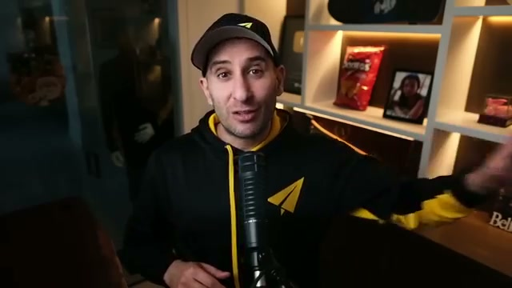
네 번째 법칙은 자신에게 먼저 지불하라는 것이다. 식비보다 앞서 자신의 미래에 투자하라는 표현으로 제시된다. 모든 급여에서 일정 금액을 즉시 저축이나 투자로 옮기는 습관은 지켜야 할 원칙이다. 부는 버는 데서만 오지 않고, 지키고 불려나가는 데서 온다.
영상은 이것이 전형적인 백만장자의 습관이라고 말한다. 자수성가한 백만장자 절반은 초기부터 소득의 20% 이상을 저축한다고 설명된다. 이는 절제와 만족의 지연을 필요로 한다. 단기적 즐거움 일부를 포기하고 미래의 성공을 선택하는 행동이다.
마시멜로 실험도 이 맥락에서 언급된다. 만족을 미룬 아이들이 더 성공한다는 심리학적 사례를 통해, 돈 역시 당장 쓰는 능력보다 기다리고 불리는 능력이 중요하다고 말한다. 저축은 자동화해야 하며, 자신에게 먼저 내는 세금처럼 다뤄야 한다. 자신에게 먼저 쓰지 못하면 결국 남에게만 돈을 쓰게 된다는 경고도 나온다.
다섯 번째 법칙은 수입보다 적게 쓰라는 것이다. 영상도 이것이 뻔하게 들릴 수 있다고 인정하지만, 동시에 가장 많이 무시되는 핵심이라고 말한다. 번 돈을 다 쓰지 말고, 버는 것보다 더 쓰지 말라는 단순한 규칙이 부의 기반이 된다. 이 원칙을 지키지 못하면 아무리 수입이 늘어도 순자산은 쌓이지 않는다.
영상은 “부자는 검소히 부를 지키고, 가난한 이는 부자인 척하다 더 가난해진다”고 설명한다. 백만장자 대다수는 검소하며, 64%는 소박한 집에 살고, 55%는 중고차를 산다고 말한다. 또한 대부분 저렴하게 휴가를 가고, 84%는 돈으로 도박하기를 거부한다고 제시된다. 쿠폰을 모으는 것도 단순한 재미가 아니라 낭비된 1달러가 자신을 위해 쓰일 수 없음을 알기 때문이라고 해석된다.
영상은 보상 자체를 금지하지는 않는다. 가끔 자신에게 보상을 줄 수는 있지만, 소득이 늘었다고 생활 수준을 부풀리지 말라고 조언한다. 자신의 부에 맞게 성장해야 하며, 그 부를 망치지 않아야 한다. 수입이 늘어날수록 지출을 잘 관리하면 투자 가능한 “황금 격차”가 생기고, 그 차이가 진정한 부를 쌓는 기반이 된다.
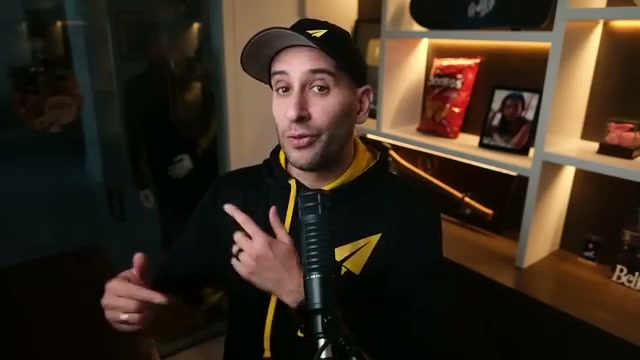
여섯 번째 법칙은 나쁜 빚을 피하고 좋은 빚을 활용하라는 것이다. 영상은 사람을 두 종류로 나눈다. 이자를 내는 쪽과 이자를 받는 쪽이다. 부자가 되려면 두 번째가 되어야 한다. 카드 잔액, 급여일 대출, 페라리 할부 구매는 모두 나쁜 빚으로 분류된다.
나쁜 빚은 사람을 옭아매고 미래를 갉아먹는다. 평균적인 신용카드 이자는 미래의 현금 흐름을 줄이는 규칙처럼 작동한다. 가치 없는 것을 사기 위해 절대 빚내지 말라고 강조한다. 구매하려는 것이 돈을 벌거나 절약해주지 않는다면 빚내서 사지 말라는 실용적 기준이 제시된다.
반면 좋은 빚은 수익을 내는 자산에 쓰이는 빚이다. 자산은 주머니에 돈을 넣어주고, 부채는 주머니에서 돈을 빼간다고 설명한다. 예를 들어 자신의 집도 현금을 계속 소모한다면 부채가 될 수 있다. 반면 임대 부동산이나 사업 대출은 잘 관리하면 수익을 창출하므로 좋은 빚이 될 수 있다. 부자들은 남의 돈을 전략적으로 활용하지만, 위험을 존중하고 갚을 계획을 세운다.
일곱 번째 법칙은 복리의 힘을 활용하고 투자를 시작하라는 것이다. 시간은 부를 쌓는 데 가장 큰 아군이자 적으로 묘사된다. 투자를 미루는 하루하루가 놓치는 수익이라는 뜻이다. 복리는 돈이 돈을 벌고, 그 돈이 다시 돈을 버는 구조다.
영상은 아인슈타인이 복리를 세계 8대 불가사의라 불렀다고 소개한다. 복리를 이해하면 이익을 얻고, 모르면 손해를 본다는 메시지가 이어진다. 1,000달러를 연 10%로 투자하면 첫해 100달러를 번다. 이를 재투자하면 다음 해에는 1,100달러의 10% 이자를 받아 110달러를 벌고, 총액은 1,210달러가 된다.
계속 굴리면 10년 후에는 추가 납입 없이 약 2,600달러가 된다고 설명된다. 이는 복리 재투자의 힘이다. 수익이 나면 한 그루의 나무가 아니라 과수원을 심는 셈이라는 비유도 등장한다. 투자할 충분한 돈을 기다리지 말고, 매달 50달러라도 지금 시작하는 것이 10년 뒤 500달러로 시작하는 것보다 낫다고 말한다. 작은 씨앗이 거목이 되려면 지금 심어야 한다는 결론이다.
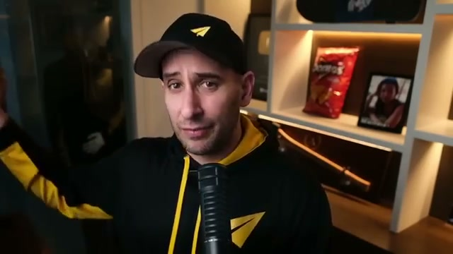
여덟 번째 법칙은 여러 소득원을 만들라는 것이다. 소득원이 하나뿐이면 실패 지점도 하나뿐이다. 실직, 고객 이탈, 업계 변화가 생기면 재정도 함께 침몰한다. 부자는 이를 알기 때문에 여러 엔진을 가진 배를 만든다고 표현된다.
영상은 백만장자가 보통 7개의 소득원을 가진다고 말한다. 다만 개인마다 숫자는 다를 수 있고, 핵심은 분산이다. 연구에 따르면 백만장자의 65%는 최소 3개의 소득원이 있었고, 3분의 1은 5개 이상이었다고 제시된다. 부업, 투자 등 무엇이든 소득원을 다양화하는 것이 중요하다.
하지만 영상은 여기서 사람들이 흔히 실수한다고 지적한다. 처음부터 7개를 모두 가지려 하면 에너지가 분산되어 진정한 부를 쌓지 못한다. 우선 하나의 확실한 소득원부터 만들고, 그것을 제대로 익힌 뒤 다른 소득원을 추가해야 한다. 각각의 새 소득원은 부의 보안층이자 힘을 배가시키는 역할을 한다.
이 법칙은 앞선 집중 원리와 충돌하지 않는다. 처음에는 집중해서 하나를 만들고, 이후에는 안정된 기반 위에 확장한다는 순서가 중요하다. 능동적 소득을 구축하고, 사업과 투자로 수동적 소득까지 함께 만들어야 한다. 특정 수입에만 의존하지 않고 분산 투자로 자산이 스스로 늘어나게 하라는 메시지다.
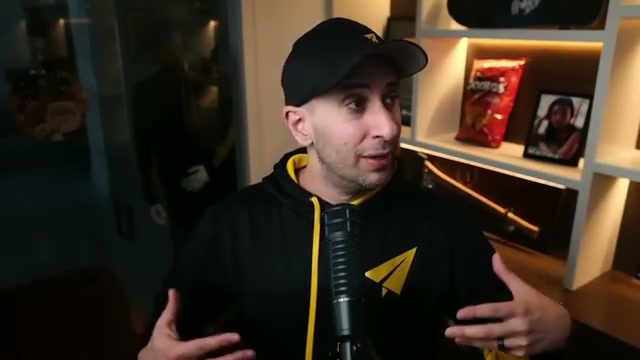
아홉 번째 법칙은 자는 동안에도 돈을 버는 수동적 소득을 만들라는 것이다. 노동 소득만으로는 굴레를 벗어날 수 없다고 설명한다. 자신의 부재 중에도 창출되는 소득이 필수라는 주장이다. 버핏의 표현처럼, 자는 동안 돈 버는 법을 찾지 못하면 죽을 때까지 일해야 한다는 경고가 나온다.
수동적 소득은 공짜 돈이 아니다. 주식, 배당, 인덱스 펀드 같은 투자에서 발생할 수 있고, 임대 부동산, 직접 만든 시스템, 자동화된 사업, 온라인 상품, 로열티에서도 나올 수 있다. 초기에는 노력과 구축 시간이 필요하다. 그러나 시스템이 만들어지면 자신의 시간을 자유롭게 해준다.
영상은 아침에 일어나 밤새 100달러를 벌었다고 상상해보라고 말한다. 더 나아가 1,000달러나 10,000달러를 벌었다고 상상하게 한다. 목표는 시간과 돈을 분리하는 것이다. 오늘부터 내일, 내년에도 수익을 줄 무언가를 만들라는 조언이 이어지며, 이것이 진정한 경제적 자유라고 정리된다.
열 번째 법칙은 배움을 멈추지 말라는 것이다. 영상은 모든 것을 안다고 생각할 때, 계좌가 그 생각이 틀렸음을 증명한다고 말한다. 부자들은 부의 학생이며, 책을 읽고 세미나에 가고 새 기술을 익힌다. 부를 유지하고 키우는 사람은 배움을 비용이 아니라 자산 축적으로 본다.
구체적 수치도 제시된다. 부자의 88%는 매일 30분 이상 독서로 배우는 데 시간을 쓴다고 설명된다. 그들이 읽는 것은 전기, 비즈니스 서적, 업계 뉴스다. 가십이나 쓸모없는 정보가 아니다. 이 차이는 정보 소비의 목적이 다르다는 점을 보여준다.
영상은 마음을 돈처럼 복리로 불어나는 백만 달러 자산으로 대하라고 말한다. 새로운 기술과 통찰은 은행 예금처럼 보이지 않는 자산이다. 성장 마인드셋을 갖고 강의, 투자, 멘토링, 피드백을 구해야 한다. Evan Carmichael은 자신의 핵심 철학을 “믿음”으로 설명하며, 초창기에 빌 게이츠 등 성공 사례를 연구하고 전략을 모델링한 것이 돌파구가 되었다고 말한다.
매일 스스로에게 “내일의 나를 더 가치 있게 만들 오늘 배울 것은 무엇인가?”라고 물으라는 조언도 나온다. 더 많이 배울수록 더 많이 벌 수 있다는 단순한 결론으로 이어진다. 배움은 당장 눈에 보이지 않지만, 시간이 지나면 수입, 기회, 판단력으로 전환되는 자산이다.
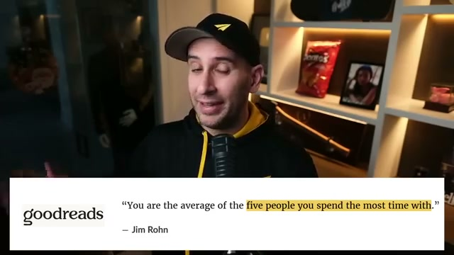
열한 번째 법칙은 인맥이 곧 자산이라는 것이다. 혼자서는 할 수 없고, 시도해서도 안 된다고 말한다. 함께 어울리는 사람들이 성공을 좌우한다는 관점이다. Jim Rohn의 “당신은 가장 많은 시간을 보내는 다섯 명의 평균”이라는 말이 핵심 인용으로 등장한다.
영상은 주변 다섯 친구가 가난하고 부정적이며 안주한다면, 자신의 미래도 비슷한 방향으로 끌릴 가능성이 높다고 질문한다. 성공한 사람들은 의도적으로 성공의 인맥을 만든다. 그들은 성공한 사람들과 어울리고, 낙관적이며 목표 지향적인 동료를 찾는다. 환경이 기준, 대화, 기회, 행동 수준을 바꾸기 때문이다.
성공한 사람들과의 대화는 새로운 아이디어, 기회, 더 높은 기준을 심어준다. 반면 부정적인 사람들은 정체를 강화할 수 있다. 영상은 사랑하는 사람과 절교하라는 뜻이 아니라, 시간을 전략적으로 쓰라는 뜻이라고 선을 긋는다. 목표를 이룬 멘토를 찾고, 기업가 모임과 온라인 커뮤니티에 참여해 인맥을 넓히면 자산도 함께 늘어난다고 말한다. “끼리끼리 모이면 결국 은행도 같이 간다”는 식의 표현으로, 관계와 재정의 방향이 연결된다고 강조한다.
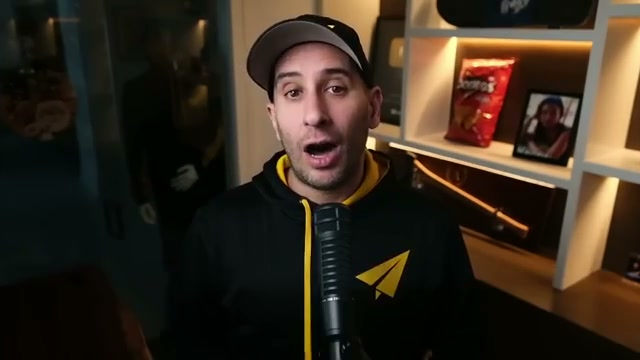
열두 번째 법칙은 혼자 하지 말고 도움과 멘토십을 요청하라는 것이다. 자존심과 비밀주의는 사람을 가난하게 만들 수 있다고 설명한다. Evan Carmichael은 창업 초기 월 300달러를 벌던 시절, 어려움을 부끄러워해 숨기고 성공한 척 버티다가 무너질 뻔했다고 말한다. 이 고백은 도움 요청이 약함이 아니라 생존 전략이라는 메시지로 이어진다.
성공한 사람들은 항상 도움을 요청한다. 그들은 코치를 고용하고, 멘토를 찾고, 자문단을 꾸린다. 모르는 것을 인정하기에 자존심이 너무 세면 성장에 한계가 따른다. 자존심은 결국 큰 대가를 치르게 만든다.
영상은 소규모 사업의 82%가 현금 흐름 문제로 실패한다고 말한다. 그 원인 중 상당수는 창업자가 재정 조언을 구하거나 제때 업무를 위임하지 못한 데 있다고 설명한다. 이미 자신이 가고 싶은 길을 걸어본 사람을 찾아 그들에게서 배우라는 조언이 나온다. 위기에 처했다면 침묵 속에서 고통받지 말고 도움을 요청해야 한다. 제때 도움을 받으면 사업뿐 아니라 정신 건강도 지킬 수 있다. 성공은 팀 스포츠라는 결론으로 이 법칙이 정리된다.
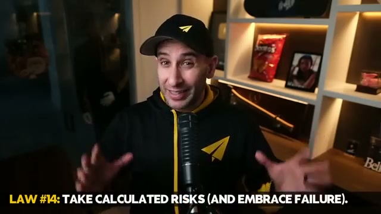
열세 번째 법칙은 수익을 재투자하라는 것이다. 돈이 들어오면 축하하고 싶은 유혹이 생긴다. “다 해냈으니 써볼까?”라는 생각이 자연스럽게 든다. 하지만 영상은 부자들은 다르게 행동하며, 그들은 돈을 재투자한다고 설명한다.
워런 버핏도 이 원칙을 강조하는 인물로 등장한다. 처음 돈을 벌면 쓰고 싶은 유혹이 생기지만 참아야 한다. 사업 이익이든 주식 수익이든 그 돈을 다시 부의 시스템에 넣어야 한다. 이렇게 작은 사업이 제국으로 성장한다는 논리다.
Evan은 자신의 첫 회사 사례도 언급한다. 첫 계약 후 자동차를 사는 대신 사업에 재투자했고, 추후 매각으로 진짜 현금화를 했다고 설명한다. 버핏이 핀볼 기계 부업을 주식 포트폴리오로 키운 방식도 재투자의 예로 제시된다. 수익으로 자산을 늘리고, 늘어난 자산이 더 큰 수익을 내는 선순환이 핵심이다.
반대로 번 돈을 다 쓰면 복리 성장을 멈추고 다시 원점으로 돌아간다. 성공을 축하하되 돈을 다시 일하게 해야 한다. 만족을 조금만 미루면 부가 눈덩이처럼 불어나는 모습을 볼 수 있다. 이 법칙은 앞서 나온 저축, 복리, 수동적 소득 원리와 연결된다.
제공된 1편 마지막 구간은 열네 번째 법칙의 도입부까지 다룬다. 법칙 14는 계산된 위험을 감수하고 실패를 받아들이라는 것이다. 위험 없이 보상은 없다는 말은 진부하지만 사실이라고 설명한다. 부자가 되려면 안전지대를 벗어나 사업을 시작하고, 부동산에 투자하고, 큰 고객에게 제안해야 한다.
영상은 성공이 보장되지 않고 실수할 수 있어도 괜찮다고 말한다. 백만장자의 63%는 위험을 감수한 뒤 사업에서 한 번은 실패했다고 인정한다고 제시된다. 그러나 그들은 실패를 끝으로 보지 않았다. 실패를 데이터로 보고 배우며 계속 나아갔다.
승자는 패배를 두려워하지 않지만, 패자는 두려워한다는 속담식 표현도 나온다. 실패는 성공 과정의 일부이며, 실패를 피하는 사람은 성공도 피하게 된다는 것이 이 구간의 핵심이다. 제공된 세그먼트는 여기서 문장이 끊기므로, 다음 편에서는 제14법칙의 구체 사례와 이후 법칙들이 이어질 것으로 보인다.
“전략은 말이 아니라 행동이다.”
“결정하지 않는 것은 확실한 오답과 같다.”
“속도는 최고의 이점이다.”
“돈은 가치를 따라간다.”
“부는 타인을 도우며 쌓인다.”
“돈은 목표가 아니라 자유와 목적을 위한 수단이다.”
“자신에게 먼저 지불하라.”
“자산은 돈을 넣어주고, 부채는 돈을 빼간다.”
“투자를 미루는 하루하루가 놓치는 수익이다.”
“성공은 팀 스포츠다.”
“실패는 끝이 아니라 데이터다.”
이 1편의 중심 메시지는 부가 빠르게 만들어지는 것처럼 보일 때에도 실제 기반은 매우 구체적이라는 점이다. 빠른 결정, 집중, 현금 흐름, 뛰어난 팀, 헌신, 가치 창출, 저축, 검소함, 좋은 빚과 나쁜 빚의 구분, 복리, 여러 소득원, 수동적 소득, 배움, 인맥, 멘토십, 재투자가 모두 연결되어 하나의 시스템을 이룬다. 영상은 돈을 버는 행위를 단순한 요령이 아니라 사고방식, 행동 속도, 자산 구조, 인간관계, 학습 태도의 총합으로 설명한다.
실용적으로는 세 가지 질문이 남는다. 첫째, 지금 완벽한 준비를 핑계로 미루고 있는 결정은 무엇인가. 둘째, 현금 흐름과 소득 구조에서 돈이 더 빨리 들어오고 늦게 나가도록 바꿀 수 있는 부분은 무엇인가. 셋째, 나의 시간, 돈, 에너지가 한 가지 핵심 기회에 집중되어 있는가, 아니면 너무 많은 일에 흩어져 있는가. 이 질문에 답하는 것이 영상이 말하는 “빠르게 돈을 버는 법”의 현실적 출발점이다.
다만 이 내용은 개인별 재무 조언이라기보다 영상 속 부의 원칙을 정리한 분석이다. 투자, 대출, 사업 확장, 재투자는 개인의 상황과 위험 감내 수준에 따라 달라져야 한다. 그럼에도 이 1편이 반복해서 강조하는 방향은 분명하다. 기다림보다 실행, 완벽보다 속도, 소비보다 재투자, 혼자 버티기보다 팀과 멘토, 그리고 돈 자체보다 가치 창출에 초점을 맞추라는 것이다.
댓글
GitHub 이슈 기반 댓글 시스템입니다.